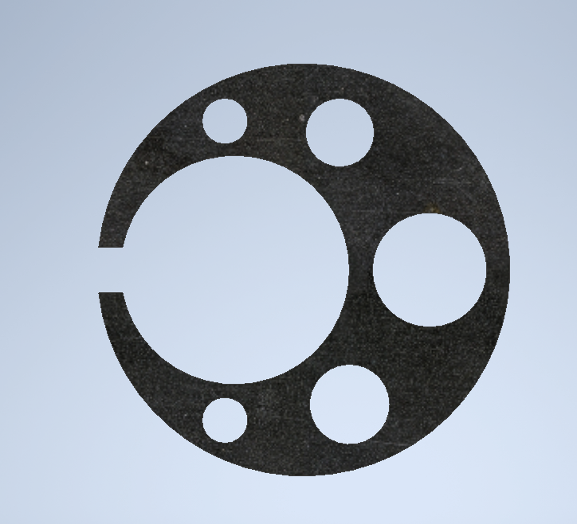
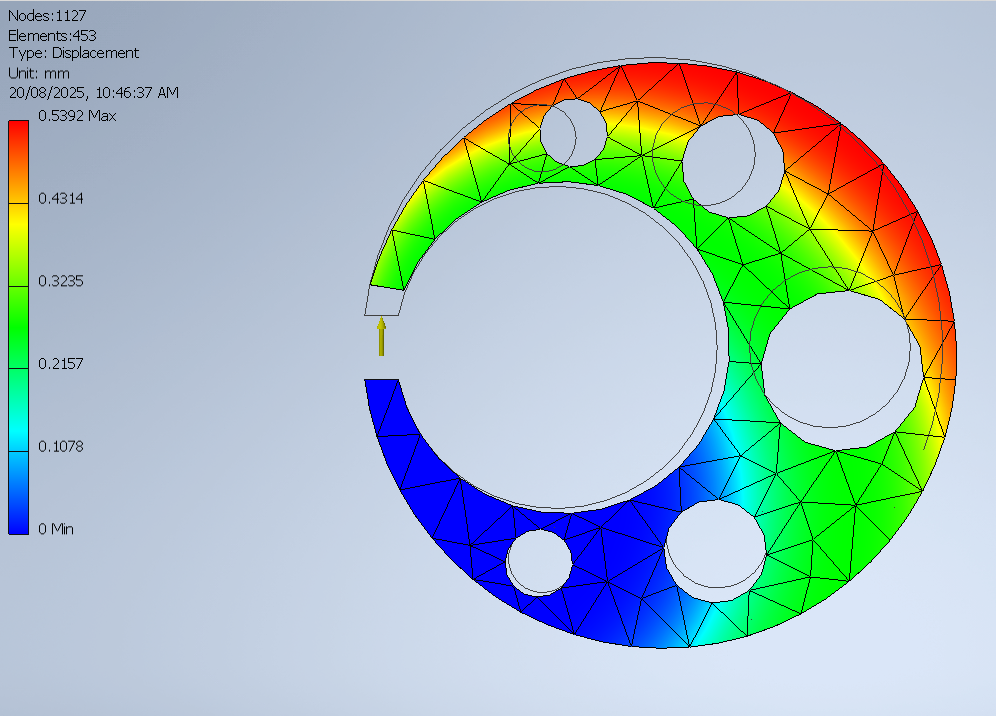
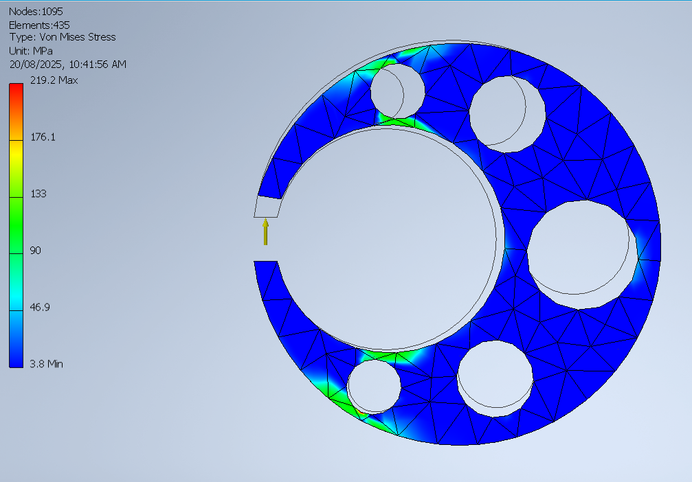
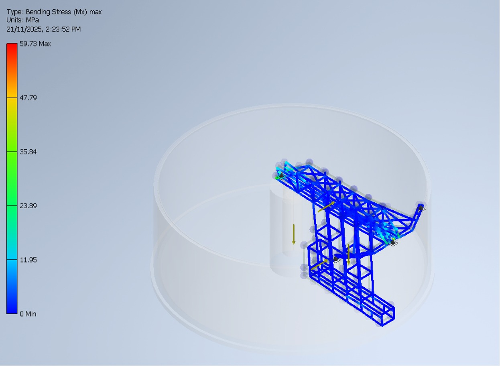
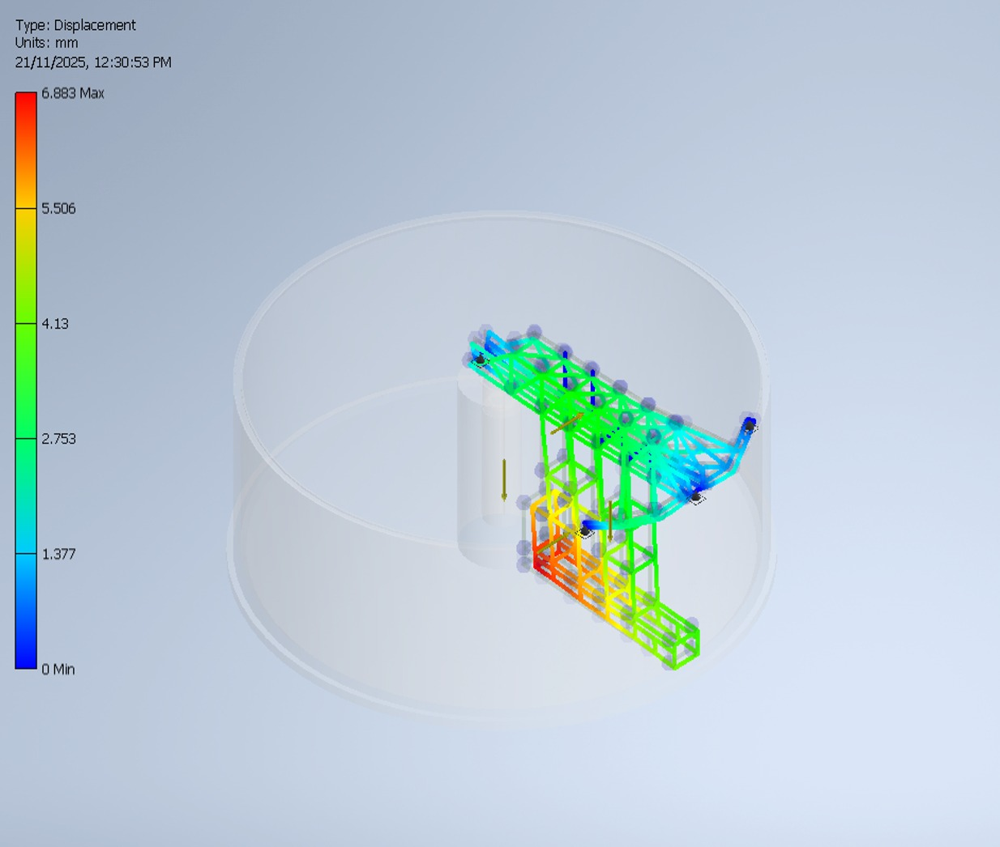
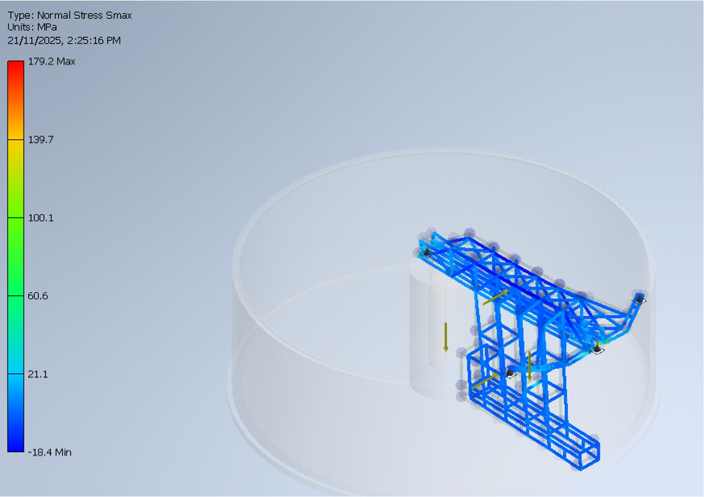
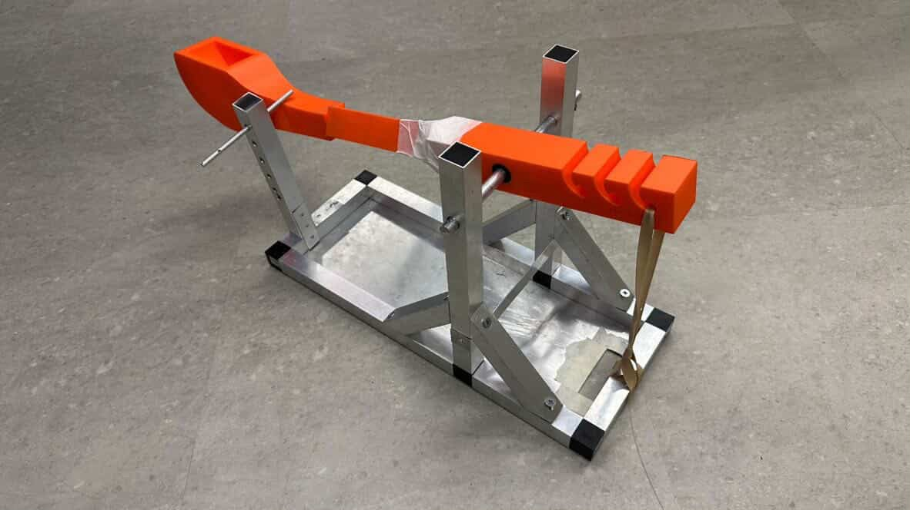

From my early engineering studies at TAFE to mechanical
design, university, mechatronics and robotics. This is a
growing record of the projects, skills, mistakes and
milestones that are shaping me as an engineer.
START //
2024
CURRENT //
UTS ENGINEERING
LOG STATUS //
ACTIVE
01 // TIMELINE
From Foundations to Robotics.
2024
STAGE 01 // ENGINEERING FOUNDATIONS
Where My Engineering Journey Started
2024 marked the beginning of my formal engineering journey at TAFE NSW.
During the first half of the year, I completed my Certificate III in
Engineering – Technical and began building my foundation in technical
engineering, CAD, assembly work, PLC control and practical engineering.
FIRST HALF // 2024
Certificate III in Engineering – Technical
Completed my Certificate III in Engineering – Technical at TAFE NSW.
This was my first completed engineering qualification and the
starting point of my engineering journey.
TAFE NSWCERTIFICATE IIICOMPLETED
PROJECT 01 // CAD & ASSEMBLY // 2024
Governor Arm Assembly
One of my final CAD projects during my Certificate III studies at
TAFE NSW. This was my first major assembly project and one of the
most challenging CAD projects I had completed at that stage of my
engineering journey.
The project involved creating the Governor Arm assembly and producing
an engineering drawing with sectional views, component identification,
dimensions and assembly details.
One of my final engineering projects completed during my
Certificate III studies at TAFE NSW. This project gave me
practical experience with PLC control and automation.
The original video shows the completed system operating
in 2024.
PLCAUTOMATIONCONTROL SYSTEMS
STATUS // COMPLETED PROJECT
ORIGINAL VIDEO // 2024
SECOND HALF // 2024
Diploma of Engineering – Technical (Mechanical)
After completing my Certificate III, I continued into the
Diploma of Engineering – Technical (Mechanical) at TAFE NSW.
This marked the next stage of my engineering studies and moved
my learning further into mechanical engineering theory,
calculations and problem solving.
MECHANICAL ENGINEERINGTAFE NSWDIPLOMAIN PROGRESS
DIPLOMA STUDY // SECOND HALF // 2024
Mathematics, Calculus & Thermodynamics
During this stage of my Diploma, much of my study focused on
engineering mathematics and problem solving. I studied
mathematics, calculus, thermodynamics and engineering
calculations used in mechanical engineering.
This developed the mathematical and analytical foundation that
I would continue using in later mechanical design and engineering
analysis work.
In the first part of 2025, I continued and completed my Diploma of
Engineering – Technical (Mechanical) at TAFE NSW. A large part of this
stage focused on mathematics, calculus, thermodynamics and engineering
calculations, together with practical workshop manufacturing.
ENGINEERING STUDY // 2025
Mathematics, Calculus & Thermodynamics
Much of my Diploma focused on solving engineering problems using
mathematics and calculations. I studied mathematics, calculus,
thermodynamics and engineering calculations used in mechanical
engineering.
This helped me move beyond only creating components and understand
more of the theory and calculations behind mechanical engineering.
One of my practical Diploma projects was completed in the TAFE NSW
mechanical workshop. Starting with supplied metal, I manufactured
the individual components and assembled them into the completed
mechanical clamp.
The project involved marking out, measuring, machining, drilling
and checking component dimensions during manufacturing. I used
workshop equipment and precision measuring tools including a height
gauge, caliper and micrometer.
Diploma of Engineering – Technical (Mechanical) Completed
Completing the Diploma strengthened my foundation in mechanical
engineering theory, engineering calculations and practical
manufacturing.
After completing this qualification, I continued my engineering
studies into the Advanced Diploma of Engineering – Mechanical.
TAFE NSWDIPLOMAMECHANICAL ENGINEERINGCOMPLETED
SECOND HALF // 2025
Advanced Diploma of Engineering – Mechanical
After completing my Diploma of Engineering – Technical (Mechanical),
I continued into the Advanced Diploma of Engineering – Mechanical at
TAFE NSW. My work moved further into mechanical design, engineering
analysis, FEA and larger engineering projects.
TAFE NSWADVANCED DIPLOMAMECHANICAL ENGINEERING
PROJECT 01 // STRUCTURAL ANALYSIS // 2025
C-Frame Mechanical Design & FEA
One of my Advanced Diploma projects involved designing and analysing
a C-frame mechanical component. I used Finite Element Analysis (FEA)
to investigate how the design behaved under load, including its
displacement and Von Mises stress distribution.
MECHANICAL DESIGNFEADISPLACEMENTVON MISES STRESS
DESIGN

C-frame geometry
DISPLACEMENT

Maximum displacement:
0.5392 mm
VON MISES STRESS

Maximum stress:
219.2 MPa
PROJECT 02 // MECHANICAL SYSTEM DESIGN // 2025
Agitated Cement Slurry Basin Bridge System
A major Advanced Diploma project involved the mechanical design and
engineering analysis of a bridge system for an agitated cement slurry
basin. The project included the bridge structure, mechanical assembly,
engineering drawings and structural analysis of the system.
Finite Element Analysis was used to investigate the structural
behaviour of the bridge frame under loading, including bending
stress, displacement and normal stress.
BENDING STRESS

Bridge frame bending stress analysis.
DISPLACEMENT

Bridge frame displacement analysis.
NORMAL STRESS

Bridge frame normal stress analysis.
MILESTONE // END OF 2025
UTS Engineering Offer
At the end of 2025, I received and accepted an offer to study the
Bachelor of Engineering (Honours) in Mechanical & Mechatronic
Engineering at the University of Technology Sydney (UTS).
This marked the next stage of my engineering journey, moving from
my TAFE mechanical engineering studies into university-level
mechanical and mechatronic engineering.
UTSBACHELOR OF ENGINEERING (HONOURS)MECHANICALMECHATRONICSOFFER ACCEPTED
2026
STAGE 03 // UNIVERSITY + MECHATRONICS
Beginning My University Engineering Journey
In 2026, I began the Bachelor of Engineering (Honours) in
Mechanical & Mechatronic Engineering at the University of
Technology Sydney (UTS). This marked a new stage in my engineering
journey, building on my mechanical engineering background from
TAFE NSW and expanding into university-level engineering,
mechatronics, electronics and programming.
UTSMECHANICAL ENGINEERINGMECHATRONICS2026
PROJECT 01 // UTS // MECHANICAL DESIGN // 2026
Catapult Design & Build Project
My first major university engineering project at UTS was the
design, manufacture, assembly and testing of a mechanical
catapult. The project was completed by a five-person team and
required us to turn an engineering design into a working
physical prototype.
My main practical contribution was working on the 3D-printed
catapult arm components. I prepared the parts for manufacturing,
split the components where required for printing, prepared them
in the slicer and contributed to the physical build and assembly
of the final prototype.
3D-printed components prepared for the catapult arm.
03 // FINAL PROTOTYPE

Completed mechanical catapult ready for final testing.
FINAL TESTING // PERFORMANCE
During final testing, the catapult was required to launch
a projectile into a target positioned between 3 and 4 metres
away using a single energy source. Our team had three
attempts available and successfully hit the target on the
second attempt.
Another requirement was to completely disassemble the
prototype within five minutes. Our team completed the
disassembly in approximately
50 seconds.
We received full marks for the testing component of the project.
TARGET // 3–4 MSUCCESS // ATTEMPT 02DISASSEMBLY // ~50 SECTESTING // FULL MARKS
NEXT
STAGE 04 // STILL BUILDING
ENGINEERING LOG ACTIVE
The Journey Continues.
More robotics, mechanical systems, embedded
electronics, computer vision, intelligent machines
and increasingly ambitious engineering builds are
still to come.